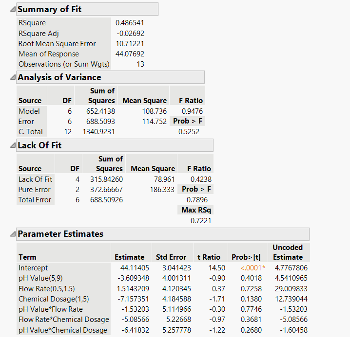
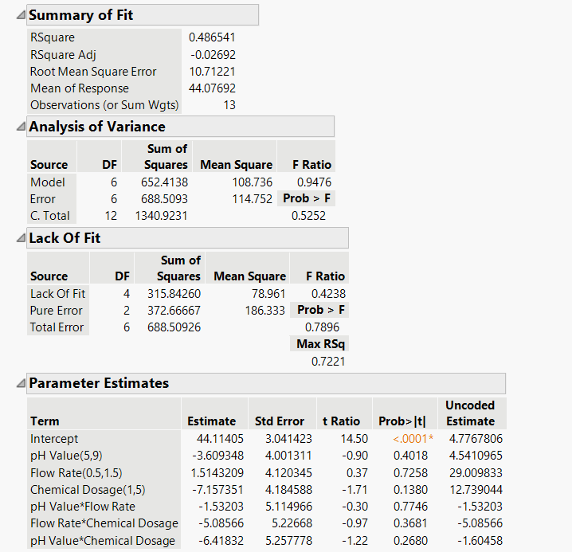

Srivardhan Rajappa Muralidhar
Industrial Engineering Graduate Student | Process • Quality • Simulation • Analytics

Industrial Engineering Graduate Student | Process • Quality • Simulation • Analytics
Master’s student in Industrial Engineering at Arizona State University with hands-on experience in Design of Experiments, Six Sigma (DMAIC), discrete-event simulation, and advanced manufacturing optimization. Actively seeking entry-level and internship roles in Industrial Engineering, Quality, and Operations.
Objective: Identify key operating parameters influencing contaminant removal efficiency.
Methodology: Designed a 2³ full factorial DOE with center points to study pH, flow rate, and chemical dosage. Applied randomization, built regression models, and evaluated main effects, interaction effects, and residual diagnostics in JMP.
Tools: JMP Pro · DOE · Regression/ANOVA · Interaction plots · Residual analysis
 


Outcome: Chemical dosage identified as the dominant factor with interaction behavior supporting optimization near neutral pH.
Objective: Reduce contamination excursions and stabilize cleanroom operations.
Methodology: Defined CTQs, established baseline metrics, identified dominant root causes using Pareto analysis, implemented standardized SOPs and training, validated improvements using statistical tests, and deployed SPC monitoring with a control plan.
Tools: DMAIC · Pareto · Fishbone · Two-sample t-test · SPC (I-MR)
Outcome: Achieved statistically validated contamination reduction and sustained process stability.
Objective: Reduce customer waiting time while maintaining efficient cashier utilization.
Methodology: Collected real arrival and service data, fitted stochastic distributions, built a Python-based discrete-event simulation, validated the model using hypothesis testing, and ran staffing scenario experiments.
Tools: Python · DES · Exponential/Lognormal fitting · Replication analysis

Outcome: Identified optimal staffing levels balancing wait time reduction and utilization.
Objective: Analyze contamination control as a socio-technical system.
Methodology: Applied systems engineering thinking to map contamination sources across people, equipment, processes, and environment. Structured analysis using DMAIC and evaluated DOE/SPC-based improvement strategies.
Tools: Systems engineering · DMAIC · Fishbone · Pareto · SPC


Outcome: Proposed scalable, data-driven contamination control strategies for cleanroom operations.
Objective: Minimize residual stress and distortion in Wire Arc Additive Manufacturing.
Methodology: Built FEM simulations in Simufact Welding, developed regression and ANOVA models in Minitab, and applied Grey Wolf Optimization in MATLAB to identify optimal process parameters.
Tools: Simufact Welding · FEM · Minitab · MATLAB · GWO


Outcome: Achieved reduced residual stress and distortion through data-driven optimization.
Email: srajapp1@asu.edu
LinkedIn: linkedin.com/in/srivardhan372